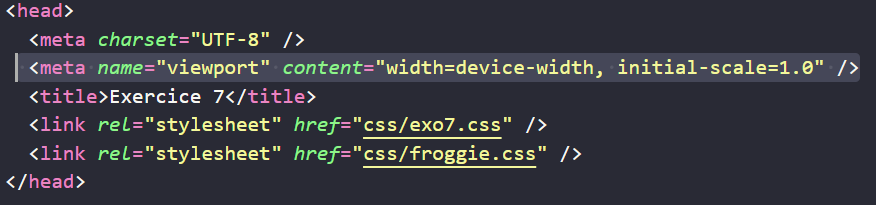
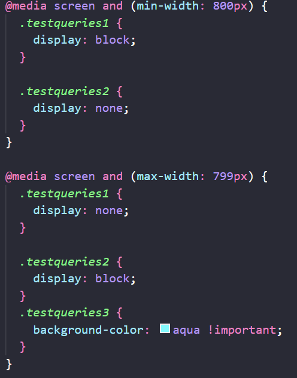

Froggiesplaining :
 🎯 Objectifs de cet exercice :
🎯 Objectifs de cet exercice :
Dans ce 7ème cours, vous allez découvrir le
Viewport et les
Media Queries qui permettent le
Responsive Web Design (design
adaptatif).
📱 Le VIEWPORT :

Le viewport est la zone d'affichage visible du navigateur. La balise meta viewport est
essentielle pour le responsive design :
-
width=device-width : Le viewport prend la largeur de l'écran de l'appareil (smartphone,
tablette, PC...)
-
initial-scale=1.0 : Définit le niveau de zoom initial à 100% (évite le zoom automatique
sur mobile)
📺 Les MEDIA QUERIES :
Les media queries permettent d'appliquer des styles CSS différents selon les caractéristiques de
l'appareil.
Types de médias :
On peut cibler tous les médias avec
all ou en choisir un spécifique :
- screen : Les écrans (PC, laptop, tablettes, smartphones, TV...)
- print : Pour l'impression du site
- speech : Pour les lecteurs d'écran (accessibilité)
- all : Tous les périphériques (valeur par défaut)
🔧 Les propriétés principales :
- width : Largeur exacte de la fenêtre du navigateur
-
min-width : Largeur minimale (de la limite vers le haut) - Ex:
min-width: 768px = à partir de 768px jusqu'à l'infini
-
max-width : Largeur maximale (de la limite vers le bas) - Ex:
max-width: 767px = de 0px à 767px
- height : Hauteur exacte de la fenêtre
- min-height : Hauteur minimale de la fenêtre
- max-height : Hauteur maximale de la fenêtre
-
orientation : Orientation de l'écran - Valeurs :
portrait (vertical)
ou landscape (horizontal)
-
device-width : Largeur de l'écran physique (et non la fenêtre). Accepte
min- et max-
-
device-height : Hauteur de l'écran physique. Accepte
min- et
max-
💡 Exemple d'utilisation :
@media screen and (max-width: 768px) { /* styles pour mobile */ }

🧪 Testez : Redimensionnez votre navigateur pour voir les éléments apparaître/disparaître
selon la taille de l'écran !